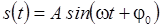
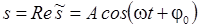
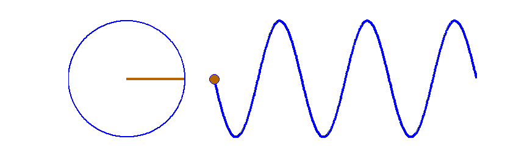
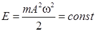
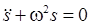

1.2.1 Гармонические колебания и их характеристики

Периодические колебания
называются гармоническими, если колеблющаяся
величина меняется с течением времени по закону косинуса или
синуса:
или
.
Здесь  -
циклическая частота колебаний, A – максимальное отклонение
колеблющейся величины от положения равновесия (амплитуда
колебаний), φ(t) =
ωt+φ0 – фаза
колебаний,
φ0 – начальная
фаза.
-
циклическая частота колебаний, A – максимальное отклонение
колеблющейся величины от положения равновесия (амплитуда
колебаний), φ(t) =
ωt+φ0 – фаза
колебаний,
φ0 – начальная
фаза.
График гармонических колебаний представлен на
рисунке:
Используя теорему Эйлера (раздел 1.1), можно представить
уравнение гармонических колебаний в экспоненциальной
форме:
Физический смысл имеет только действительная часть
выражения:
.
На представлении колеблющейся величины в
экспоненциальной форме основан способ изображения гармонического колебания в
виде векторной
диаграммы.
Векторная диаграмма представляет собой вектор, длина которого равна амплитуде колебаний, а угол φ между вектором и осью Оx – фазе колебаний. Так как фаза меняется с течением времени по закону φ(t) = ωt+φ0, то вектор вращается вокруг точки O с угловой скоростью ω, равной круговой частоте гармонического колебания. При этом проекция вектора на ось Оx изменяется в соответствии с уравнением гармонических колебаний.

При гармонических колебаниях полная энергия системы
(механическая энергия при механических колебаниях и энергия электромагнитного
поля в электрическом колебательном контуре) с течением времени не изменяется.
Можно показать, что полная энергия механической колебательной системы при
гармонических колебаниях равна:
.
Гармонически колеблющаяся
величина s(t) подчиняется
дифференциальному уравнению:
,
которое
называется дифференциальным уравнением гармонических
колебаний.
Если какой-либо процесс описывается уравнением такого
вида, то этот процесс представляет собой гармоническое колебаний с частотой
ω.
Собственные колебания некоторых физических систем
(например, пружинного маятника или электрического колебательного контура) при
определенных условиях являются близкими к гармоническим. При этом частота
собственных колебаний определяется физическими параметрами системы (например,
массой груза и упругостью пружины для пружинного маятника). Значения амплитуды и
начальной фазы зависят от начальных условий в системе.
Кроме того, гармоническими будут вынужденные колебания,
если они происходят в результате гармонического внешнего воздействия на
колебательную систему. Частота вынужденных гармонических колебаний равна частоте
внешнего воздействия, а амплитуда и фаза зависят как от внешнего воздействия,
так и от физических параметров колебательной системы (см. раздел
1.2.3).
Следует также отметить, что любое колебание (даже непериодическое) можно представить как сумму гармонических колебаний с различными амплитудами и частотами (разложить в ряд Фурье или интеграл Фурье (раздел 1.1). Зависимость амплитуд гармоник ряда или интеграла Фурье от частоты называется спектром колебательного процесса.